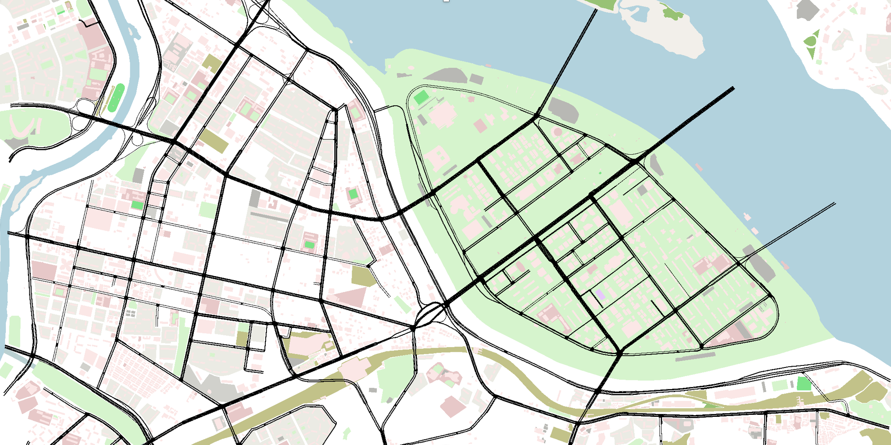

발표 자료
최종 발표 PDF
업로드 예정8조 · 여의도를 달리는 자율주행
증권맨이 출근하는 여의도, 그 실제 도로를 달립니다.
여의도 곳곳에 핀포인트 7곳을 정하고,
그 사이 구간을 심야시간·출근시간·낮시간 시간대별로 달린 모습을 보여드립니다.
핀포인트 7곳 · 경로 42개 (7 × 6) · 시간대 3개모든 주행을 모델 하나로

실제 도로망 기반 지도입니다. 연두색 선은 예시 경로이며 모델의 주행 결과가 아닙니다.
관측
모델은 속도와 차로만 정합니다
심야시간 · 출근시간 · 낮시간
핀포인트
I자료
II도로 환경
실제 지도 기반 도로망, 시간대별 실측 교통량

서울시 TOPIS의 평일 실측 교통량으로
심야시간·출근시간·낮시간 세 가지 교통 상황을 만들었습니다.
일부 교차로에는 실제 신호 주기를 적용했습니다.
차가 적은 시간입니다. 도로가 한산해도 신호와 주변 차량은 계속 살펴야 합니다.
III학습 방법
직접 수집한 선생님 데이터로 BC 학습 후
PPO로 미세조정
선생님이 여의도를 주행하며
관측과 행동을 기록합니다.
수집한 데이터로 선생님의 행동을
따라 하도록 학습합니다.
BC 모델에서 시작해 도착·충돌·신호 위반
보상으로 주행을 다듬습니다.
안전 쉴드 · 모델이 낸 속도가 앞차·신호·교차로 기준 안전 속도를 넘으면 그 아래로 자릅니다. 학습과 주행 모두에 적용됩니다.
어느 길로 갈지는 출발할 때 SUMO가 최단 경로로 정하고, 차선을 따라 도는 조향도 SUMO가 처리합니다.
지금 얼마나 가속하거나 감속할지 정합니다. 연속값 하나입니다.
왼쪽으로 옮길지, 그대로 갈지, 오른쪽으로 옮길지 셋 중 하나를 고릅니다.
내비게이션이 길을 알려주면 운전자는 속도와 차로만 판단하는 것과 같습니다.
내 속도 1개, 차로별 앞뒤 차량의 거리·상대속도 20개, 차로 연결성 5개, 전방 차량 밀도 5개
신호 상태와 정지선 거리, 다음 교차로 거리, 남은 경로 비율, 허용 속도, 교차로에서 만나는 차량의 거리와 양보 관계, 먼 앞차의 거리·상대속도
다음 도로로 가는 방향(직진·좌회전·우회전·유턴) 4개, 주변 5개 차로별로 갈 수 있는 방향 20개. 어느 차로가 정답인지는 알려주지 않습니다.
모든 값은 −1~1 범위로 정규화했습니다. 예: 속도는 22.22m/s, 차간거리는 50m 기준. 컬럼별 정의는 Hugging Face 데이터셋 카드에 있습니다.
IV결과
핀포인트 7곳 사이 모든 경로 42개(7 × 6)
심야시간 · 출근시간 · 낮시간 각각 주행
완주율
충돌률
경로 · 핀포인트 7곳 × 6
총 주행 · 42개 × 3개 시간대
모델 하나로 모든 시간대, 모든 경로를 주행했습니다.
| 시간대 | 주행 | 완주 | 완주율 | 충돌 | 충돌률 | 평균 완주 시간 |
|---|---|---|---|---|---|---|
| 심야시간 03시 | 42 | – | –% | – | –% | –분 –초 |
| 출근시간 08시 | 42 | – | –% | – | –% | –분 –초 |
| 낮시간 12시 | 42 | – | –% | – | –% | –분 –초 |
| 전체 | 126 | – | –% | – | –% | –분 –초 |
시간대마다 교통량이 달라 완주 시간은 다릅니다.
그래도 모델이 상황에 맞게 속도와 차로를 조절해, 모든 시간대에서 목적지까지 완주했습니다.
새 모델 학습이 끝나면 결과를 업데이트합니다.
V주행 영상
심야시간 · 출근시간 · 낮시간
빨간 차가 자율주행 차량
같은 경로 · 출발지 → 목적지모델은 세 영상 모두 같습니다
차가 적어 막힘 없이 달립니다.
정체 구간에서 속도를 줄이고 차로를 바꾸며 달립니다.
일상 교통 속에서 신호와 주변 차량에 맞춰 달립니다.
8조 · 증권맨의 삶